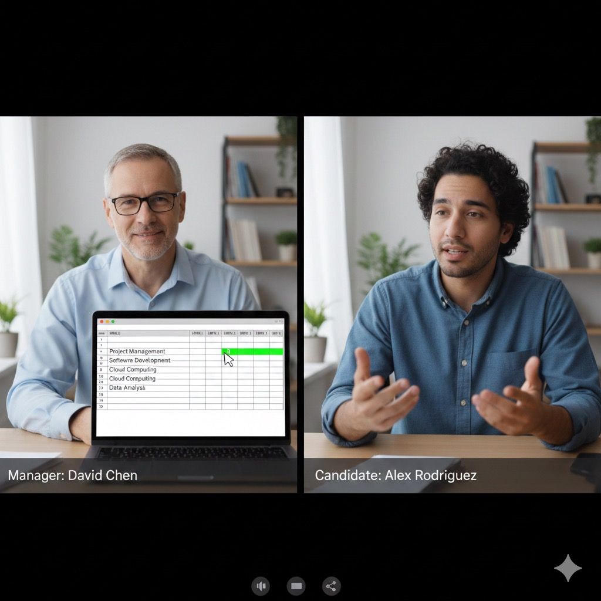

Nuestras Herramientas
Plataformas digitales para gestionar, medir y mejorar los procesos clave de tu organización
En astraPeople contamos con plataformas ya desarrolladas que ayudan a las empresas de manufactura a digitalizar, estandarizar y medir procesos de RH, capacitación y operación en todos los niveles de la organización: desde operación, ingeniería y supervisión, hasta gerencias y dirección.
Nuestras herramientas están listas para usarse, son fáciles de adoptar y cuentan con acompañamiento continuo. Cuando existe un proceso específico que requiere ajustes o una digitalización adicional, lo analizamos contigo y lo llevamos a cabo.
Gestión de Competencias
Desarrollo • Evaluación • Seguimiento
Esta herramienta se basa en la ISO 9001 (Cláusula 7.2 – Competencia), que establece la necesidad de definir, evaluar y desarrollar las competencias requeridas para cada puesto.
Flujo de la herramienta:
- El requisitor define la necesidad del puesto con base en la descripción de puesto.
- Se establecen las competencias requeridas y el nivel esperado de cada una.
- Durante el reclutamiento, los candidatos son evaluados directamente en la plataforma.
- El sistema muestra qué persona se ajusta mejor al perfil definido.
- Una vez seleccionado, se genera un plan de desarrollo para cerrar brechas de competencia.

Amonestaciones
Registro • Análisis • Planes de Acción
Plataforma integral para registrar y gestionar amonestaciones con análisis predictivo. Descubre mediante dashboard interactivo qué KPI es el más afectado o qué área necesita atención inmediata para establecer planes de acción efectivos.
- Registro digital de incidentes
- Dashboard con KPIs afectados
- Identificación automática de patrones
- Planes de acción correctiva
Kaizen Hub
Mejora Continua • Puntos • Reconocimiento
Plataforma para capturar, evaluar y ejecutar ideas de mejora con trazabilidad completa hasta su implementación. Incluye sistema de puntos, opción de premiar iniciativas y descargar reconocimientos para fortalecer la cultura de mejora continua, con paneles para originador, implementador y comité evaluador.
- Registro y evaluación de ideas con estatus y responsables
- Paneles por rol: originador, implementador y comité evaluador
- Sistema de puntos, premios y reconocimientos descargables
- Metodologías integradas: 8D, ciclo PDCA, 5 Porqués, Ishikawa y más
- ROI y ahorro por idea implementada

Entrega de Premios
Reconocimiento • Motivación • Gestión
Sistema completo para conocer y registrar a quienes les entregarás obsequios y reconocimientos. Gestiona programas de incentivos, controla presupuestos y mide el impacto en la motivación y rendimiento del equipo.
- Catálogo de premios y reconocimientos
- Gestión de presupuestos
- Entrega digital de reconocimientos
- Análisis de impacto en motivación